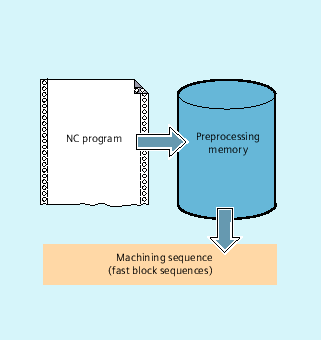

Depending on its expansion level, the control system has a certain quantity of so-called preprocessing memory in which prepared blocks are stored prior to program execution and then output as high-speed block sequences while machining is in progress. These sequences allow short paths to be traversed at a high velocity. Provided that there is sufficient residual control time available, the preprocessing memory is always filled.
The beginning and end of the machining step to be buffered in the preprocessing memory are identified in the part program with "STOPFIFO" and "STARTFIFO" respectively. The processing of the preprocessed and buffered blocks starts only after the "STARTFIFO" command or if the preprocessing memory is full.
Automatic preprocessing memory control is called with the "FIFOCTRL" command. "FIFOCTRL" acts initially just like "STOPFIFO". Whatever the programming, processing will not start until the preprocessing memory is full. However, the response to the emptying of the preprocessing memory does differ: With "FIFOCTRL", the path velocity is reduced increasingly once the fill level reaches 2/3 in order to prevent complete emptying and deceleration to standstill.
Programming the "STOPRE" command in a block will stop block preprocessing and buffering. The following block is not executed until all preprocessed and saved blocks have been executed in full. The preceding block is halted in exact stop (as with G9).
| Notice |
Program abortIf tool offset or spline interpolations are active, a "STOPRE" command should not be programmed, as this will lead to contiguous block sequences being interrupted. |
| STOPFIFO | |
| ... | |
| STARTFIFO |
| ... | |
| FIFOCTRL | |
| ... |
| ... | |
| STOPRE | |
| ... |
| Note |
The "STOPFIFO", "STARTFIFO", "FIFOCTRL" and "STOPRE" commands must be programmed in their own block. |
| "STOPFIFO" identifies the start of a machining step to be buffered in the preprocessing memory. "STOPFIFO" stops processing and fills the preprocessing memory until:
|
| "STARTFIFO" starts rapid processing of the machining step; the preprocessing memory is filled in parallel to this. |
| Activation of automatic preprocessing memory control |
| Stop preprocessing |
| Note |
The preprocessing memory is not filled or filling is interrupted if the machining step contains commands that require unbuffered operation (search for reference, measuring functions, etc.). |
| Note |
The control generates an internal preprocessing stop in the event of access to status data ($SA...). |
| Program code | Comment |
|---|---|
| ... | |
| N30 MEAW=1 G1 F1000 X100 Y100 Z50 | ; Measurement block with probe at first measuring input and linear interpolation. |
| N40 STOPRE | ; Preprocessing stop. |
| ... |